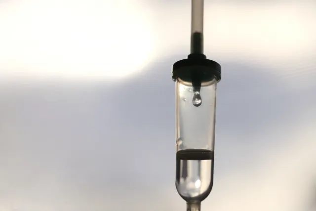

私たちのSLE
笑って生きていくために一緒に考えよう
サフネロー
生物学的製剤

先発品(後発品なし)
生物学的製剤
サフネロー
薬価
96,068円(300mg2mL1瓶)
SLEの症状の管理に有用であり、従来の治療法と併用されることがあります。しかし、これらの薬剤には副作用があり、適切な医療専門家の監視の下で使用する必要があります。

index
サフネローの効果
2021 年に日本で承認された新しい生物学的製剤です。
SLEの病態に関与している「インターフェロン」を抑える薬です。
- 腎細胞がんの治療：腎細胞がんの治療に使用されます。腎細胞がんは、腎臓の細胞ががん化した病気であり、進行すると他の臓器に転移しやすいため、治療が重要です。サフネローは、腎細胞がんの増殖を阻害することで、がんの進行を遅らせることができます。
- 進行性甲状腺がんの治療：進行性甲状腺がんの治療にも使用されます。甲状腺がんは、甲状腺の細胞ががん化した病気であり、進行すると周辺の組織やリンパ節に転移しやすいため、治療が必要です。サフネローは、甲状腺がんの成長を抑制することができます
サフネローのSLEの治療の特徴
全身性エリテマトーデス（SLE）の治療に使用されるバイオロジック製剤の一つです。
- 皮膚症状や関節症状などを抑えることが期待されます。
- 腎炎を伴うSLEの治療に特に効果があります。具体的には、免疫系を調節することで、腎臓の炎症を抑える作用が期待されます。
サフネローの副作用
| 呼吸器系 | 上気道感染 、 上咽頭炎 、 咽頭炎 、 気管支炎 、 ウイルス性気管支炎 、 気管気管支炎 |
| 重大な副作用 | 重篤な感染症 、 肺炎 、 播種性帯状疱疹 、 アナフィラキシー |
| その他 | 重篤な感染症、帯状疱疹、過敏症、注入に伴う反応 |
サフネローの副作用は、患者によって異なります。
治療中に副作用が現れた場合には、早期に医師に相談することが重要です。
定期的な検査やフォローアップが必要なため、
医師の指示に従って治療を受けるようにしましょう。
サフネローの注意点
妊娠中の女性には禁忌とされています。
サフネローは、SLEの治療において、比較的新しい治療法であるため、長期的な有効性や安全性については、まだ多くのデータが蓄積されていません。治療方針は、専門医によって個々の患者の症状や病態に応じて選択されます。
サフネローの服用には、医師の指示に従うことが非常に重要です。
特に、副作用の監視などが重要です。